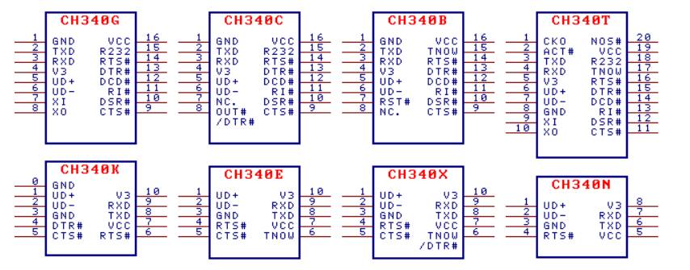

速查：CH340记录
本文最后更新于：3 个月前
1 概述
首先是数据手册：
然后是各类封装：

CH340 用的很多，简单来说就是一个能够将 USB 总线转换为各类串口的转换芯片。
之前使用的比较多的型号是 CH340C ，能够支持 USB3.0 规范，不过占用体积有点大。公司里用 CH340E 比较多，占用体积比较小，而且能够支持 USB3.1 规范。
2 引脚
CH340E 封装为 MSOP-10 ，引脚定义见上图。
电源部分
- VCC 外接 0.1uF 退耦电容
- GND 直连 USB 总线的地
- V3 电源
- 3.3V 时直接连接 VCC
- 5.0V 时外接 0.1uF 退耦电容
USB 信号部分
- UD+ 直接连接 D+
- UD- 直接连接 D-
MODEM 信号部分
- CTS# 清除发送
- DTR# 数据终端就绪
- RTS# 请求发送
指示信号
- TNOW 串口发送正在进行状态指示，高电平有效
速查：CH340记录
https://sagi-rastar.github.io/2024/03/20/速查：CH340记录/